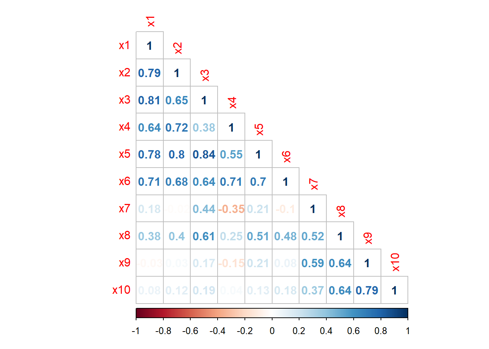
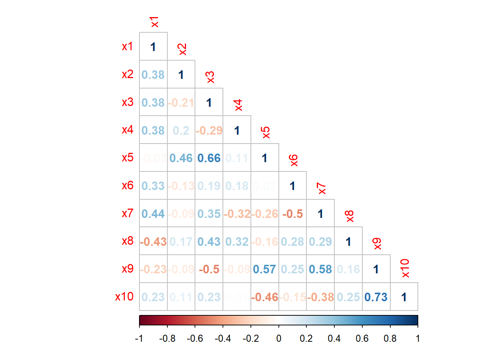
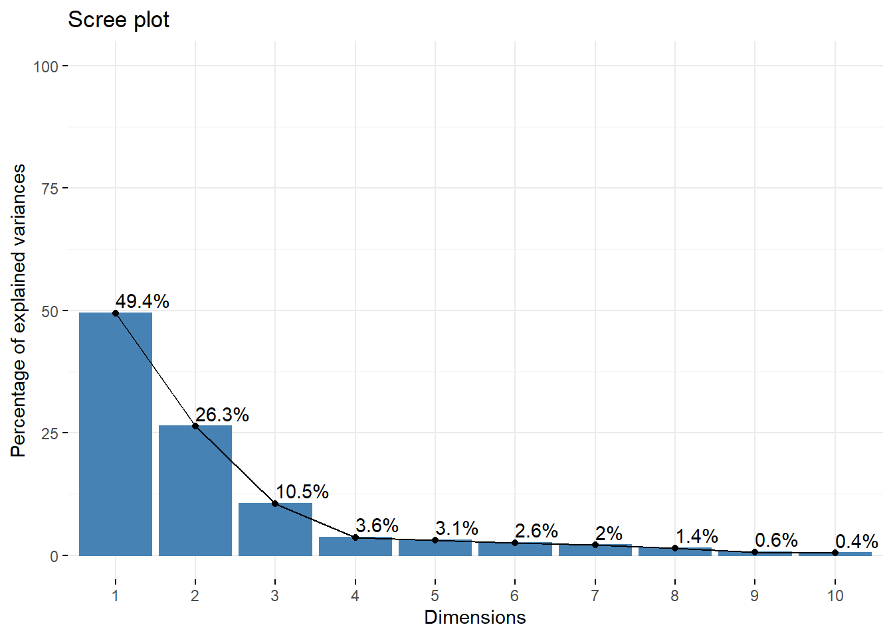
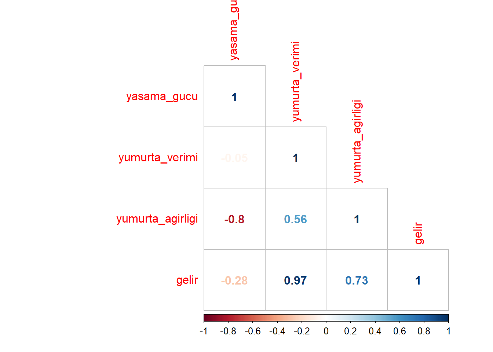
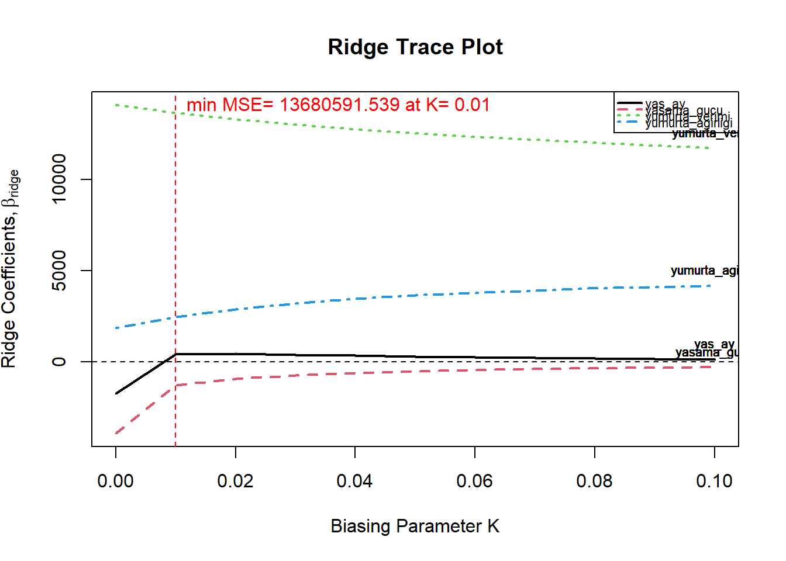
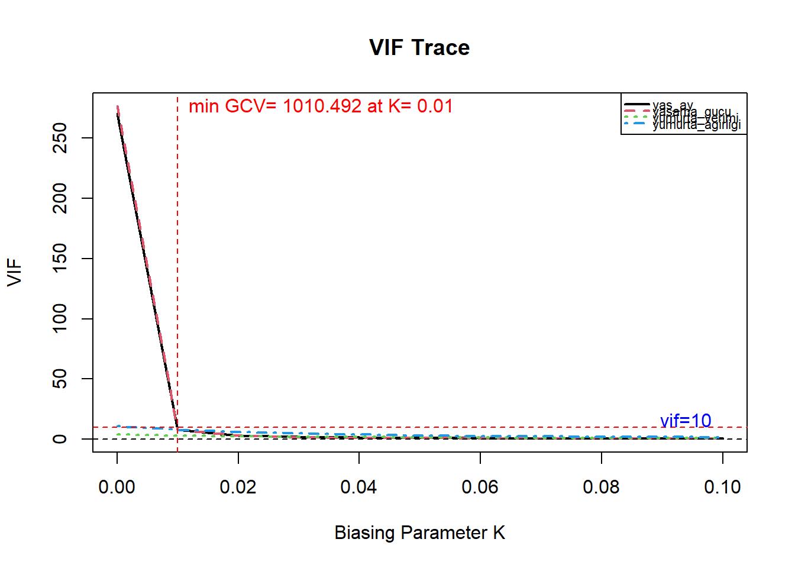

Konu 8 Çoklu Doğrusal Bağlantı
Bağımsız değişkenler arasında tam ya da tama yakın doğrusal bir ilişki yoktur. Eğer bağımsız değişkenler arasında böyle bir ilişki varsa çoklu doğrusal bağlantı olarak tanımlanabilir.
Öncelikle tam bir doğrusal bağlantı olduğu durumda Sıradan En Küçük Kareler tahminlerinin elde edilmesi mekanik olarak olanaksızdır. Bununla birlikte bağımsız değişkenler arasında tama yakın bir doğrusal bir ilişki de bulunabilir. Kennedy’nin altını çizdiği şu nokta önemlidir: Çoklu doğrusallık bağımsız değişkenler arasındaki teorik ya da gerçek doğrusal ilişkinin var olup olmamasına bağlı değildir; varlığı üzerinde çalışılan veri kümesinde yaklaşık doğrusal bir ilişkinin var olup olmadığı ile ilgilidir.
Çoklu doğrusal bağlantı varsa neler olur?
Sıradan En Küçük Kareler tahmincileri BLUE’dur (Best Linear Unbiased Estimator, En İyi Doğrusal Yansız Tahmin Edici). Fakat hassas tahmini zorlaştıran büyük varyans ve kovaryanslar olacaktır.
Güven aralıkları daha geniş olma eğiliminde olacaktır. Bunun sonucu olarak gerçek anakütle parametresinin sıfır olduğunu söyleyen \(H_0\)’ı reddedemeyebiliriz.
En az bir parametrenin t oranı istatistiksel olarak anlamlı çıkmama eğiliminde olacaktır.
Regresyon parametreleri istatistiksel olarak anlamlı olmamasına rağmen \(R^2\) değeri yüksek çıkabilir.
Sıradan En Küçük Kareler tahmincileri ve bunların standart hataları verilerdeki küçük değişimlere duyarlı olabilir.
Seçilen regresyon modeline doğrusal bağlantılı bir değişken eklemek modeldeki diğer değişkenlere ait parametre değerlerini değiştirebilecektir.
library(corrplot);library(psych);library(car);library(factoextra);library(FactoMineR);library(lmridge);library(tidyverse)
setwd("C:/Users/datanerd/Desktop/Github/rEkonometri/data")
df1 <- read.table("yagis.txt", sep = " ", header = TRUE)
df2 <- read.table("yumurta.txt", sep = " ", header = TRUE)10 tane istasyona ait yıllık yağış (mm) verileri ile havza yıllık getirisi (mm) aşağıdaki gibidir:
## Year x1 x2 x3 x4 x5 x6 x7 x8 x9 x10 y
## 1 1979 1948 4177 5496 2922 5713 3640 3203 2739 2167 2299 3255.2
## 2 1980 2261 3670 7797 3327 6934 4424 3692 3451 2866 2653 3682.7
## 3 1981 1989 4353 7392 2837 6275 4827 4476 4403 3568 3241 3921.9
## 4 1982 1999 3307 7061 3439 6641 4815 4256 4129 3447 3046 3909.3
## 5 1983 2086 4230 6564 2987 6675 3959 3900 3559 4078 3583 3768.9
## 6 1984 1717 2714 5919 3394 5605 3648 3085 2440 2631 2587 3106.4
## 7 1985 1383 2357 5053 2958 5144 3106 4052 3006 3049 2890 3069.4
## 8 1986 1470 3004 3951 2691 5116 3557 2775 1909 1952 1723 2940.2
## 9 1987 1350 2446 4280 2397 4722 3556 2818 2945 2931 2733 3015.3
## 10 1988 1602 4188 5910 3619 6869 5142 3190 3660 3964 3107 3953.2
## 11 1989 1417 3631 5145 3282 5226 3793 2663 3017 2579 3367 3172.4
## 12 1990 1662 4683 6384 6376 7313 4679 3037 3666 3142 2621 3791.0
## 13 1991 1955 4553 5679 6141 6068 3651 2601 2791 2148 2448 3344.8
## 14 1992 1974 3836 6021 5646 5876 4026 3037 3920 2583 2742 3650.3
## 15 1993 2094 4183 6733 6720 6044 6573 2465 3406 2410 2539 3878.7
## 16 1994 3149 6128 8151 9048 8384 7467 2888 3522 2496 2895 4606.2
## 17 1995 1471 2952 4151 4975 5149 4733 2603 3493 3396 3554 3498.8
## 18 1996 1691 3711 4200 4962 5359 3782 3185 3099 3381 2938 3241.0
## 19 1997 2373 4836 6704 6563 6197 5001 3902 3685 3636 3365 4013.5Çoklu doğrusal bağlantıyı tespit edelim.
Önce bir model kuralım.
##
## Call:
## lm(formula = y ~ ., data = df1[, -1])
##
## Residuals:
## Min 1Q Median 3Q Max
## -126.482 -28.635 -0.011 21.701 72.102
##
## Coefficients:
## Estimate Std. Error t value Pr(>|t|)
## (Intercept) 782.347374 209.902668 3.727 0.00581 **
## x1 0.186129 0.112160 1.659 0.13560
## x2 0.048356 0.041101 1.177 0.27321
## x3 -0.019849 0.045533 -0.436 0.67441
## x4 0.001912 0.019025 0.101 0.92240
## x5 0.119623 0.055763 2.145 0.06426 .
## x6 0.155540 0.032434 4.796 0.00136 **
## x7 0.023158 0.065288 0.355 0.73198
## x8 0.194765 0.061793 3.152 0.01356 *
## x9 0.079910 0.075390 1.060 0.32012
## x10 -0.004085 0.076757 -0.053 0.95886
## ---
## Signif. codes: 0 '***' 0.001 '**' 0.01 '*' 0.05 '.' 0.1 ' ' 1
##
## Residual standard error: 72.81 on 8 degrees of freedom
## Multiple R-squared: 0.9877, Adjusted R-squared: 0.9723
## F-statistic: 64.28 on 10 and 8 DF, p-value: 1.537e-06- Yüksek \(R^2\) fakat az sayıda anlamlı t oranı ya da en az bir parametrenin t oranının istatistiksel olarak anlamlı çıkmaması:
Uygulamamızda \(R^2\) değeri olan %99 yüksektir. Birçok t oranı istatistiksel olarak anlamlı çıkmadı.
- Bağımsız değişkenler arasındaki yüksek ikili korelasyonlar:

Söylendiği üzere yüksek korelasyonlar göze çarpıyor fakat ikili değişkenli korelasyon parametrelerine ne kadar güveneceğiz? Çünkü bu korelasyonlar hesaplanırken modeldeki diğer değişkenler sabit kalmaz.
- Kısmi korelasyon parametreleri:
Yukarıda diğer değişkenlerin sabit kalmayacağından bahsetmiştik. Üç tane değişkenimiz (\(x_1, x_2, x_3\)) olduğunu varsayalım. \(x_2\) ile \(x_3\) arasında %90’lık bir korelasyon olabilir. Fakat burada \(x_1\)’in etkisini hesaba katmadık. \(x_1\) değişkeni hem \(x_2\)’yi hem de \(x_3\)’ü etkiliyor olabilir. Yani, \(x_2\) ile \(x_3\) arasındaki yüksek korelasyon \(x_1\)’in her ikisini etkiliyor olmasından kaynaklı olabilir. Kısmi korelasyon ile \(x_1\)’in etkisi çıkarılarak \(x_2\) ve \(x_3\) arasındaki korelasyon hesaplanır. Bu değer de örneğin %30’a düşebilir.

Mesela, \(x_1\)-\(x_2\) korelasyonu %79 iken kısmi korelasyon ile %38’e düştü. İki değişken arasındaki basit korelasyon parametresi anlamlı, fakat kısmi korelasyon parametresi anlamsız ise bu durum çoklu doğrusal bağlantı problemi için bir işaret olabilir. Kısmi korelasyon yaklaşımı her zaman etkili olmamaktadır. Diğer bir anlatımla, kısmi korelasyon parametreleri yüksek olması durumunda bile çoklu doğrusal bağlantı problemi olabilmektedir.
- Yan regresyon hesaplamaları:
Modele eklenen diğer bağımsız değişkenlerin hangi bağımsız değişkenlerle yüksek derecede doğrusal bağlantılı olduğunu ortaya koymak için her bir bağımsız değişkenin geriye kalan bağımsız değişkenlere göre regresyonu hesaplanır. Uygulamamızda 10 tane bağımsız değişken vardır. Bundan dolayı 10 tane yan regresyonumuz olacaktır. Burada F testi kullanılır. \(H_0\) reddedilirse doğrusal bağlantı sonucuna ulaşılır. Oldukça yorucu bir yöntem olabilir.
- Varyans şişirme faktörü ve tolerans faktörü: Varyans şişirme faktörü ile parametre tahminlerinin ve varyanslarının çoklu doğrusal bağlantı nedeni ile gerçek değerlerinden ne kadar uzaklaştığı belirlenir. VIF’lerin hesaplanmasını göstermek için aşağıdaki gibi üç bağımsız değişkenli bir regresyon modelini inceleyelim:
\(Y_i = \beta_1 + \beta_2X_1 + \beta_3X_2 + \beta_4X_3 + \epsilon_i\)
Adım-1: \(X_1\) bağımlı; \(X_2\) ve \(X_3\) bağımsız. \(R^2\) hesapla. \(X_1\) için \(VIF = \frac{1}{(1 – R^2)}\)
Adım-2: \(X_2\) bağımlı; \(X_1\) ve \(X_3\) bağımsız. \(R^2\) hesapla. \(X_2\) için \(VIF = \frac{1}{(1 – R^2)}\)
Adım-3: \(X_3\) bağımlı; \(X_1\) ve \(X_2\) bağımsız. \(R^2\) hesapla. \(X_3\) için \(VIF = \frac{1}{(1 – R^2)}\)
Bağımlı değişken ile bağımsız değişkenler arasında ilişki yoksa (bu durumda \(R^2\) = 0) VIF \(\frac{1}{(1 – 0)}\)’dan 1’e eşit olacaktır. Eğer tam bir ilişki varsa (bu durumda \(R^2\) = 1) VIF \(\frac{1}{(1 – 1)}\)’den \(\infty\)’a eşit olacaktır. \(R^2\) = 0.9 (ya da %90) ise VIF 10 olacaktır. Literatürde yer alan pratik bir kurala göre VIF > 10 için çoklu doğrusal bağlantı deniliyor. Tolerans değeri ise 1’den \(R^2\) değerinin çıkarılması ile bulunur. Daha küçük tolerans daha büyük VIF demektir. Küçük veri setlerinde VIF > 5’de bile çoklu doğrusal bağlantı bulunabilir.
## x1 x2 x3 x4 x5 x6 x7 x8
## 8.057920 4.934190 11.000217 4.188910 8.837753 4.254056 5.365104 4.658428
## x9 x10
## 7.457020 4.278819Düzeltici önlemler için temel bileşenler analizi ve hemen arkasından temel bileşenler regresyonu konularını inceleyeceğiz. Akabinde de ridge regresyona bakacağız.
Aslında düzeltici önemlerden biri hiçbir şey yapmamaktır. Blanchard, çoklu doğrusallık için Sıradan En Küçük Kareler’in ya da daha genel olarak istatistiğin bir sorunu değil, Tanrı buyruğudur der.
Bu da bir seçenek olabileceği gibi biz temel bileşenler analizi ve regresyonu ile girişimizi yapalım.
8.1 Temel Bileşenler Analizi/Regresyonu
Temel bileşenler analizi, korelasyonlu değişkenleri korelasyonsuz değişkenlere (ortogonal değişkenler) dönüştürebilmektedir. Bu şekilde elde edilen değişkenlere temel bileşenler denir. Analizin temel düşüncesi şudur: Korelasyonlu değişkenler alt gruplara ayrılır. Herhangi bir alt gruba ait olan değişkenler bunları bir arada hareket ettiren ortak bir faktöre sahip olur. Bu ortak faktör temel bileşendir.
Basit bir ifade ile, 10 tane bağımsız değişkenimiz vardı. Biz boyut indirgeme yaparak daha az sayıda değişkenle (birbirleriyle korelasyonsuz) bağımlı değişkeni tahmin etmeye çalışacağız. Yani, örneğin fazla bilgi kaybetmeden birkaç GB veri boyutunu birkaç MB boyutuna düşürebiliriz.
Değişkenlere boyut indirgedikten sonra elde ettiğimiz değişkenlere regresyon modeli kuracağız. Buna ise temel bileşenler regresyonu denir.
Temel bileşenler analizi ile başlayalım. Burada örneğimizi basit bir şekilde anlatabilmek için değiştiriyoruz.
Adım-1: Elimizde 15 yıla ait rainfall (cm) ve runoff (cm) verileri olsun. Değerler şöyle;
rainfall <- c(105,115,103,94,95,104,120,121,127,79,133,111,127,108,85)
runoff <- c(42,46,26,39,29,33,48,58,45,20,54,37,39,34,25)
df <- data.frame(rainfall = rainfall, runoff = runoff)Adım-2: Verilerin matrise aktarılması ve ortalamadan sapmalarının alınması.
df$rainfalldev <- round(df$rainfall - mean(df$rainfall), digits = 1)
df$runoffdev <- round(df$runoff - mean(df$runoff), digits = 1)Adım-3: Kovaryans matrisinin hesaplanması.
## rainfalldev runoffdev
## rainfalldev 249.9810 141.0476
## runoffdev 141.0476 117.5238Adım-4: Özdeğerler ve özvektörlerin hesaplanması.
## eigen() decomposition
## $values
## [1] 339.5749 27.9299
##
## $vectors
## [,1] [,2]
## [1,] -0.8441048 0.5361782
## [2,] -0.5361782 -0.8441048Adım-5: Temel bileşenlerin açıklama oranlarının hesaplanması.
## [1] 0.9240013## [1] 0.07599872Birinci temel bileşen varyansın %92.4’ünü açıklarken; ikinci temel bileşen %7.6’sını açıklıyor. Temel bileşenler, değişkenlerin (örneğimizde rainfall ve runoff) doğrusal bir kombinasyonudur. Yani, rainfall \(λ_1\) ve runoff \(λ_2\)’dir ya da tam tersi.
Yazının başındaki veri setine dönelim.
Temel bileşenler analizinde ilk olarak standartlaştırılma işlemi yapılır (farklı ölçümlü verilerin yer alması). Yani, tüm hesaplamalar standart veriler üzerinden yapılır. Bağımlı değişken Y için ise merkezileştirme yapılır. Yani, Y değerlerinden Y ortalama değerleri çıkartılır. Bunu, model kurarken kesme terimine ihtiyacımız kalmaması için yapıyoruz. Bunu yapmak kesin bir kural değildir.
df1_yeni <- df1[,c(2:11)] #Sadece X'ler alındı.
df1_yeni <- as.data.frame(apply(df1_yeni, MARGIN = 2, FUN = function(x) scale(x))) #Standardize edildi.
df1_yeni$y <- df1$y - mean(df1$y) #Merkezileştirildi.
df1_yeni## x1 x2 x3 x4 x5 x6
## 1 0.1721888 0.363397603 -0.343849487 -0.8200257 -0.389046112 -0.7339610
## 2 0.8928130 -0.183230928 1.496820983 -0.6006661 0.945491926 -0.0155772
## 3 0.2665837 0.553154253 1.172843781 -0.8660641 0.225213001 0.3536941
## 4 0.2896068 -0.574604018 0.908062414 -0.5400037 0.625246516 0.3426984
## 5 0.4899081 0.420540231 0.510490392 -0.7848198 0.662408100 -0.4416594
## 6 -0.3596456 -1.213954549 -0.005473299 -0.5643770 -0.507088789 -0.7266306
## 7 -1.1286184 -1.598858662 -0.698224549 -0.8005271 -1.010956140 -1.2232683
## 8 -0.9283171 -0.901287342 -1.579762514 -0.9451419 -1.041559796 -0.8100144
## 9 -1.2045947 -1.502902175 -1.316581035 -1.1043807 -1.472196968 -0.8109307
## 10 -0.6244117 0.375257394 -0.012672792 -0.4425106 0.874447723 0.6423304
## 11 -1.0503397 -0.225279276 -0.624629728 -0.6250394 -0.921331144 -0.5937662
## 12 -0.4862729 0.908947972 0.366500525 1.0507595 1.359734282 0.2180808
## 13 0.1883050 0.768786810 -0.197459789 0.9234767 -0.001035462 -0.7238816
## 14 0.2320490 -0.004255906 0.076120959 0.6553706 -0.210889109 -0.3802669
## 15 0.5083266 0.369866580 0.645680878 1.2370797 -0.027267168 1.9535641
## 16 2.9372675 2.466893194 1.780001055 2.4979911 2.530324158 2.7727416
## 17 -0.9260148 -0.957351806 -1.419773773 0.2919378 -1.005491201 0.2675613
## 18 -0.4195058 -0.139026254 -1.380576531 0.2848966 -0.775963774 -0.6038456
## 19 1.1506721 1.073906878 0.622482511 1.1520440 0.139959957 0.5131313
## x7 x8 x9 x10 y
## 1 -0.08393555 -0.9481675 -1.29125899 -1.21196071 -314.23158
## 2 0.71920060 0.2396101 -0.16679432 -0.44654778 113.26842
## 3 2.00684630 1.8277621 0.96249637 0.82481608 352.46842
## 4 1.64551715 1.3706679 0.76784655 0.40319031 339.86842
## 5 1.06082089 0.4197786 1.78292124 1.56428282 199.46842
## 6 -0.27773937 -1.4469674 -0.54483323 -0.58925189 -463.03158
## 7 1.31046648 -0.5027509 0.12759342 0.06588970 -500.03158
## 8 -0.78688499 -2.3327959 -1.63712437 -2.45737837 -629.23158
## 9 -0.71626156 -0.6045128 -0.06223037 -0.27357310 -554.13158
## 10 -0.10528682 0.5882695 1.59953215 0.53508350 383.76842
## 11 -0.97083437 -0.4844004 -0.62848439 1.09725119 -397.03158
## 12 -0.35657482 0.5982789 0.27720031 -0.51573765 221.56842
## 13 -1.07266350 -0.8614197 -1.32182384 -0.88979538 -224.63158
## 14 -0.35657482 1.0220085 -0.62204969 -0.25411345 80.86842
## 15 -1.29603061 0.1645399 -0.90035067 -0.69303669 309.26842
## 16 -0.60129320 0.3580542 -0.76200452 0.07670061 1036.76842
## 17 -1.06937869 0.3096756 0.68580407 1.50157950 -70.63158
## 18 -0.11349885 -0.3476058 0.66167392 0.16967450 -328.43158
## 19 1.06410570 0.6299752 1.07188635 1.09292683 444.06842Kovaryans matrisini aşağıdaki gibi oluşturalım.
## x1 x2 x3 x4 x5 x6
## x1 1.00000000 0.79404489 0.8099080 0.63970323 0.7752141 0.7129395
## x2 0.79404489 1.00000000 0.6463593 0.72026928 0.7965001 0.6830817
## x3 0.80990796 0.64635934 1.0000000 0.37713523 0.8405912 0.6367616
## x4 0.63970323 0.72026928 0.3771352 1.00000000 0.5453583 0.7086409
## x5 0.77521414 0.79650014 0.8405912 0.54535834 1.0000000 0.7019490
## x6 0.71293954 0.68308169 0.6367616 0.70864090 0.7019490 1.0000000
## x7 0.17691772 -0.01513445 0.4366362 -0.35274604 0.2114573 -0.1030525
## x8 0.37593752 0.39791947 0.6147578 0.24628053 0.5117468 0.4794635
## x9 -0.03410999 0.03326402 0.1690332 -0.15071195 0.2054040 0.0833055
## x10 0.08058727 0.12261396 0.1865701 0.03522937 0.1251372 0.1797110
## x7 x8 x9 x10
## x1 0.17691772 0.3759375 -0.03410999 0.08058727
## x2 -0.01513445 0.3979195 0.03326402 0.12261396
## x3 0.43663616 0.6147578 0.16903324 0.18657010
## x4 -0.35274604 0.2462805 -0.15071195 0.03522937
## x5 0.21145731 0.5117468 0.20540401 0.12513717
## x6 -0.10305249 0.4794635 0.08330550 0.17971098
## x7 1.00000000 0.5187275 0.59255388 0.36865464
## x8 0.51872746 1.0000000 0.63756523 0.63699489
## x9 0.59255388 0.6375652 1.00000000 0.78544619
## x10 0.36865464 0.6369949 0.78544619 1.00000000Özdeğerler ve özvektörler hesaplaması aşağıdaki gibi yapılır.
## eigen() decomposition
## $values
## [1] 4.94476901 2.63104132 1.04707047 0.36402519 0.30691960 0.25645457
## [7] 0.20463143 0.13990933 0.06291811 0.04226097
##
## $vectors
## [,1] [,2] [,3] [,4] [,5] [,6]
## [1,] -0.3897876 -0.16522080 -0.21072082 -0.1907845 0.45066908 -0.30387108
## [2,] -0.3806454 -0.18765072 0.05328529 -0.5433636 -0.12726090 0.21447465
## [3,] -0.3930604 0.02940564 -0.38219638 0.2353422 0.07436552 -0.12807793
## [4,] -0.2978787 -0.32096244 0.39009458 -0.1108429 0.24606337 0.40030428
## [5,] -0.4041200 -0.06517945 -0.17945998 -0.1208066 -0.58928364 -0.05631499
## [6,] -0.3707026 -0.16101943 0.22862469 0.5460864 -0.11565508 -0.39407656
## [7,] -0.1218575 0.46239873 -0.52101492 -0.1169524 0.23664377 0.14770144
## [8,] -0.3166949 0.33762572 0.12164964 0.4435065 0.06946022 0.60350442
## [9,] -0.1355743 0.52896578 0.23733692 -0.2013530 -0.41206563 -0.11032524
## [10,] -0.1602741 0.44251959 0.47691763 -0.1922543 0.35124100 -0.35824970
## [,7] [,8] [,9] [,10]
## [1,] 0.14927571 -0.04272884 0.64354163 0.07918716
## [2,] -0.26478207 -0.57367594 -0.18937047 -0.15666345
## [3,] -0.32839220 0.31886083 -0.22727222 -0.60006525
## [4,] 0.42508300 0.43628024 -0.20996465 -0.08876735
## [5,] -0.09260475 0.39273797 0.01335586 0.52174210
## [6,] 0.30058576 -0.40178728 -0.24126430 0.08664306
## [7,] 0.42828739 -0.13571246 -0.39282174 0.22854077
## [8,] -0.24112450 -0.13427020 0.33293430 0.13475719
## [9,] 0.38790353 0.03103737 0.27474898 -0.44277958
## [10,] -0.35791414 0.15482791 -0.23500463 0.2346530010 tane özvektör elde ettik. Bu özvektörler varyansın yüzde kaçını açıklıyor? Örneğin, \(λ_1\) olan 4.94476901’i tüm λ’ların toplamına bölerek yüzdeleri bulabiliyorduk.
## Importance of components:
## Comp.1 Comp.2 Comp.3 Comp.4 Comp.5
## Standard deviation 2.1643747 1.5787861 0.9959726 0.58725290 0.53922717
## Proportion of Variance 0.4944769 0.2631041 0.1047070 0.03640252 0.03069196
## Cumulative Proportion 0.4944769 0.7575810 0.8622881 0.89869060 0.92938256
## Comp.6 Comp.7 Comp.8 Comp.9 Comp.10
## Standard deviation 0.49290664 0.44029690 0.36406824 0.244144693 0.200091760
## Proportion of Variance 0.02564546 0.02046314 0.01399093 0.006291811 0.004226097
## Cumulative Proportion 0.95502802 0.97549116 0.98948209 0.995773903 1.000000000Bu sonuçları görselleştirebiliriz.

Mesela burada ilk altısı bizi tatmin ediyor. Çünkü kümülatife baktığımızda %95.5’ini açıklıyor. Bu durumda kalan dördünü atabiliriz.
İlk altı özvektörü kullanalım. Standardize edilmiş veri seti ile skorları (ilk altısı) çarpıp yeni bir matris elde edeceğiz.
pcr <- princomp(df1_yeni[,-11])
df_ <- lm(df1_yeni$y ~ 0 + pcr$scores[,1] + pcr$scores[,2] + pcr$scores[,3] + pcr$scores[,4] + pcr$scores[,5] + pcr$scores[,6])
summary(df_)##
## Call:
## lm(formula = df1_yeni$y ~ 0 + pcr$scores[, 1] + pcr$scores[,
## 2] + pcr$scores[, 3] + pcr$scores[, 4] + pcr$scores[, 5] +
## pcr$scores[, 6])
##
## Residuals:
## Min 1Q Median 3Q Max
## -91.680 -50.984 -8.005 45.460 133.215
##
## Coefficients:
## Estimate Std. Error t value Pr(>|t|)
## pcr$scores[, 1] 192.162 8.041 23.896 3.98e-12 ***
## pcr$scores[, 2] -13.275 11.024 -1.204 0.2500
## pcr$scores[, 3] -33.127 17.475 -1.896 0.0805 .
## pcr$scores[, 4] -73.941 29.637 -2.495 0.0268 *
## pcr$scores[, 5] -64.063 32.277 -1.985 0.0687 .
## pcr$scores[, 6] 15.674 35.310 0.444 0.6644
## ---
## Signif. codes: 0 '***' 0.001 '**' 0.01 '*' 0.05 '.' 0.1 ' ' 1
##
## Residual standard error: 75.87 on 13 degrees of freedom
## Multiple R-squared: 0.9783, Adjusted R-squared: 0.9683
## F-statistic: 97.74 on 6 and 13 DF, p-value: 4.701e-10Bu sonuçlardan bağımlı değişken Y’yi en iyi PC1 ile PC4’ün açıkladığını söyleyebiliriz. Gujarati şöyle der: Kuşkusuz buradaki güçlük bu temel bileşenleri nasıl yorumlamamız gerektiğini bilmiyor olmamızdandır. Ancak temel bileşenler yöntemi korelasyonlu açıklayıcı değişken sayısını korelasyonsuz birkaç değişkene indirgemede kullanışlı bir yoldur. Sonuç olarak doğrusal bağlantı sorunuyla karşılaşmayız.
8.2 Ridge Regresyon
Bu konuyu, Yumurta tavukçuluğunda gelirin Ridge Regresyon analizi ile tahmini çalışmasından faydalanarak inceleyeceğiz.
## yas_ay yasama_gucu yumurta_verimi yumurta_agirligi gelir
## 1 1 99.9 1.0 43.0 78
## 2 1 99.8 11.0 44.4 839
## 3 1 99.7 35.0 45.4 3257
## 4 1 99.6 53.0 47.9 4927
## 5 2 99.5 77.0 49.1 7061
## 6 2 99.4 91.0 50.4 10078
## 7 2 99.3 92.0 52.5 9779
## 8 2 99.2 93.0 53.6 9929
## 9 3 99.1 94.0 54.6 10080
## 10 3 99.0 94.5 55.4 10587Bağımlı değişken:
- gelir
Bağımsız değişken(ler):
yasama_gucu
yumurta_verimi
yumurta_agirligi
yas_ay
Ridge regresyon bir sapmalı tahmin yöntemidir. Sapmalı tahmin yöntemi, parametrelerde gerçekleşmesi beklenen sonuçlara ulaşmayı ve bu sonuçlara ulaşırken varyansların küçülmesini sağlar.
Kısa bir hatırlatma:
Matrisler ile parametre tahminini \(\hat{\beta} = (X'X)^{-1} (X'Y)\) eşitliği ile buluyorduk.
Çoklu doğrusal bağlantı sözkonusu olduğunda \((X'X)^{-1}\) matrisinin köşegen elemanları çok büyük değerler almaktadır. Bu sorunu giderebilmek için \(X'X\) matrisinin köşegen elemanlarına bir sabitin eklenmesi ile \((X'X + kI)^{-1}\) şeklinde ridge tahmincisi oluşturulmuş olur. Bu sabit k’dır. Bu değer seçilirken \(\frac{1}{n}\sum (Y_i - \hat{Y_i})^2\) ile bulunan ortalama hata kareyi azaltmaya ve sapmayı mümkün olduğunca küçük tutmaya dikkat edilmelidir. 0-1 arasında değer alan k’nın 0’a yakın olması istenir. Eğer 0 olursa Sıradan En Küçük Kareler tahminleri ile aynı olur.
Önce bildiğimiz haliyle regresyon modelini kuralım.
model1 <- lm(formula = gelir ~ yasama_gucu + yumurta_verimi + yumurta_agirligi + yas_ay, data = df2)
summary(model1) #Verileri defalarca kez kontrol etmeme rağmen çalışma ile aynı çıktıyı alamadım. İşaretlerde bir problem yok.##
## Call:
## lm(formula = gelir ~ yasama_gucu + yumurta_verimi + yumurta_agirligi +
## yas_ay, data = df2)
##
## Residuals:
## Min 1Q Median 3Q Max
## -870.50 -131.17 1.62 116.92 602.18
##
## Coefficients:
## Estimate Std. Error t value Pr(>|t|)
## (Intercept) 24655.490 28766.223 0.857 0.3949
## yasama_gucu -270.874 285.774 -0.948 0.3471
## yumurta_verimi 103.992 3.634 28.616 <2e-16 ***
## yumurta_agirligi 47.181 20.534 2.298 0.0252 *
## yas_ay -47.987 112.979 -0.425 0.6726
## ---
## Signif. codes: 0 '***' 0.001 '**' 0.01 '*' 0.05 '.' 0.1 ' ' 1
##
## Residual standard error: 248 on 58 degrees of freedom
## Multiple R-squared: 0.9857, Adjusted R-squared: 0.9848
## F-statistic: 1002 on 4 and 58 DF, p-value: < 2.2e-16Değişkenler arası korelasyonlar:

Yüksek \(R^2\), güçlü korelasyonlar ve istatistiksel olarak anlamlı olmayan parametreler elde ettik.
VIF değerleri ise aşağıdaki gibidir:
## yasama_gucu yumurta_verimi yumurta_agirligi yas_ay
## 276.549977 3.943549 10.769081 270.325334Yumurta verimi dışındaki değişkenlerin >10 olduğunu görüyoruz.
Aslında çoklu doğrusal bağlantının sinyallerini almış olduk.
Modeli kurmadan önce ridge izi kavramını bilmemiz gerekiyor. Ridge regresyon yönteminde en önemli nokta olan k değerinin seçimi için çeşitli yol ve algoritmalar geliştirilmiştir. Bunlardan biri ridge izidir. Burada amaç çoklu doğrusal bağlantının etkilerini görerek uygun k değerinin seçilmesidir.
Ridge regresyon modelini kuralım. Ardından hem ridge hem de VIF grafiklerine bakalım.
model2 <- lmridge(formula = gelir ~., data = df2, K = seq(0, 0.1, 0.01))
seq(0, 0.1, 0.01) #En uygun k, şunlardan biri olacak.## [1] 0.00 0.01 0.02 0.03 0.04 0.05 0.06 0.07 0.08 0.09 0.10Aşağıdaki ridge izi grafiğinde çok küçük bir k değerinden sonra parametrelerin yataylaştığını gözlemliyoruz.

Aşağıdaki VIF grafiğinde ise yine aynı k değerinden sonra değerler 10 sınırının altına iniyor.

Çalışmada da olduğu gibi en uygun k değerini 0.01 olarak bulduk. k = 0.01’e ait parametreler (2. sıra) şöyledir:
## Intercept yas_ay yasama_gucu yumurta_verimi yumurta_agirligi
## K=0 24655.4905 -47.98664 -270.87431 103.99232 47.18072
## K=0.01 5941.3695 11.59113 -89.39626 100.73553 62.46986
## K=0.02 3112.2073 12.59763 -64.61345 98.16766 73.03809
## K=0.03 1539.2932 11.25819 -51.35461 96.03373 80.98819
## K=0.04 473.4126 9.72173 -42.46333 94.20393 87.14092
## K=0.05 -302.4989 8.33787 -35.97024 92.59687 92.00060
## K=0.06 -887.3391 7.16174 -31.01780 91.15870 95.89881
## K=0.07 -1336.6124 6.18190 -27.14084 89.85224 99.06321
## K=0.08 -1685.2260 5.37242 -24.05395 88.65103 101.65538
## K=0.09 -1956.7308 4.70682 -21.56798 87.53565 103.79320
## K=0.1 -2167.7917 4.16175 -19.55083 86.49155 105.56471k = 0 iken parametrelerin önceki model ile aynı olduğuna dikkat edin. Eğer 0 olursa Sıradan En Küçük Kareler tahminleri ile aynı olur demiştik.
Modeli k = 0.01 ile yeniden kuralım.
##
## Call:
## lmridge.default(formula = gelir ~ ., data = df2, K = 0.01)
##
##
## Coefficients: for Ridge parameter K= 0.01
## Estimate Estimate (Sc) StdErr (Sc) t-value (Sc) Pr(>|t|)
## Intercept 5.9414e+03 -1.1371e+06 8.6849e+04 -13.0931 <2e-16
## yas_ay 1.1591e+01 4.1838e+02 6.9544e+02 0.6016 0.5497
## yasama_gucu -8.9396e+01 -1.2903e+03 6.9652e+02 -1.8525 0.0690
## yumurta_verimi 1.0074e+02 1.3653e+04 4.3104e+02 31.6751 <2e-16
## yumurta_agirligi 6.2470e+01 2.4762e+03 6.9175e+02 3.5796 0.0007
##
## Intercept ***
## yas_ay
## yasama_gucu .
## yumurta_verimi ***
## yumurta_agirligi ***
## ---
## Signif. codes: 0 '***' 0.001 '**' 0.01 '*' 0.05 '.' 0.1 ' ' 1
##
## Ridge Summary
## R2 adj-R2 DF ridge F AIC BIC
## 0.96990 0.96840 2.99721 1012.09783 696.71631 964.15722
## Ridge minimum MSE= 13680592 at K= 0.01
## P-value for F-test ( 2.99721 , 59.73467 ) = 3.901713e-51
## -------------------------------------------------------------------Çalışmanın sonuç bölümünden:
Sonuç olarak, bu çalışmada yumurta tavukçuluğunda satış gelirini etkileyebilecek değişkenler arasında, güçlü çoklu doğrusal bağlantı yapısından, RR (Ridge Regresyon) yönteminin EKK (En Küçük Kareler) yöntemine göre daha geçerli, tutarlı, durağan ve beklentilere uygun tahminler sağladığı görülmüştür. Çoklu regresyon analizinde eğer çoklu doğrusal bağlantı söz konusu ise, EKK yöntemiyle parametre tahmininde bulunmak yanlış sonuçlar alınmasına ve yorumlanmasına neden olabilir.